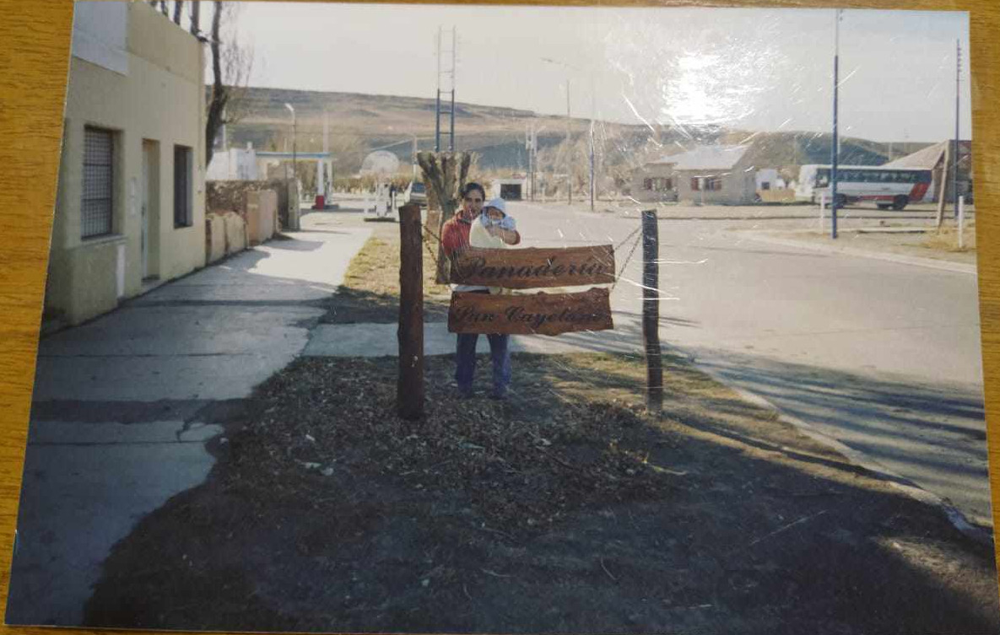
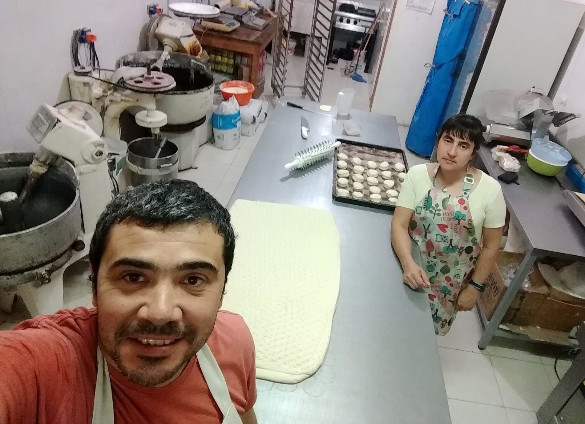
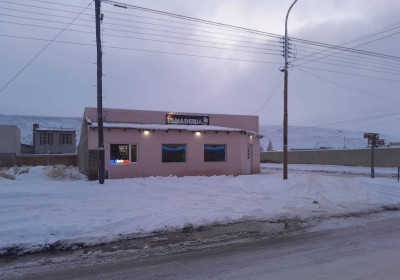
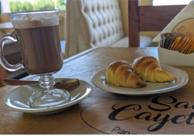
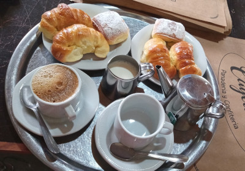
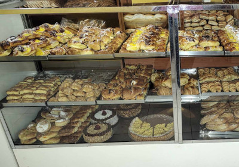
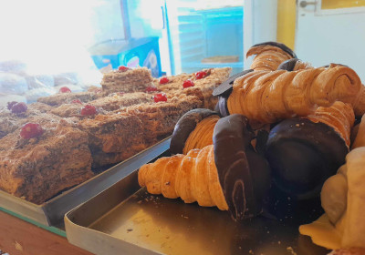
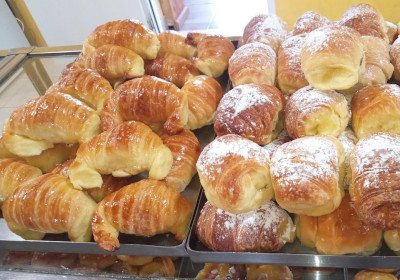

Panadería artesanal
Café, panificados y pastelería hecha a mano para locales y viajeros
Ubicados en Gobernador Gregores, te esperamos para que pruebes nuestras delicias artesanales acompañadas de un buen café calentito.
Ubicados en Gobernador Gregores, te esperamos para que pruebes nuestras delicias artesanales acompañadas de un buen café calentito.

La Panadería San Cayetano abre sus puertas en el año 2002 en Gobernador Gregores, corazón de la provincia de Santa Cruz. Nuestro nombre rinde homenaje al patrono del pan y el trabajo.

Cada día trabajamos con dedicación para acompañar a nuestros vecinos y recibir a los turistas que viajan hacia El Calafate y otros rincones de la Patagonia, ofreciendo el sabor de nuestras especialidades artesanales.






Nos encontramos en Gobernador Gregores. ¡Visitanos!
Antártida Argentina 25, Gobernador Gregores.
panasancayetano@gmail.com
(54) 2962-423873
Lunes a Viernes: 07:00 - 21:00
Sábados y Domingos: 08:00 - 21:00